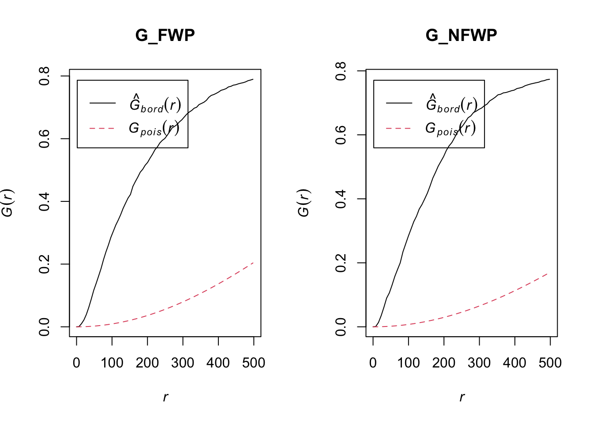
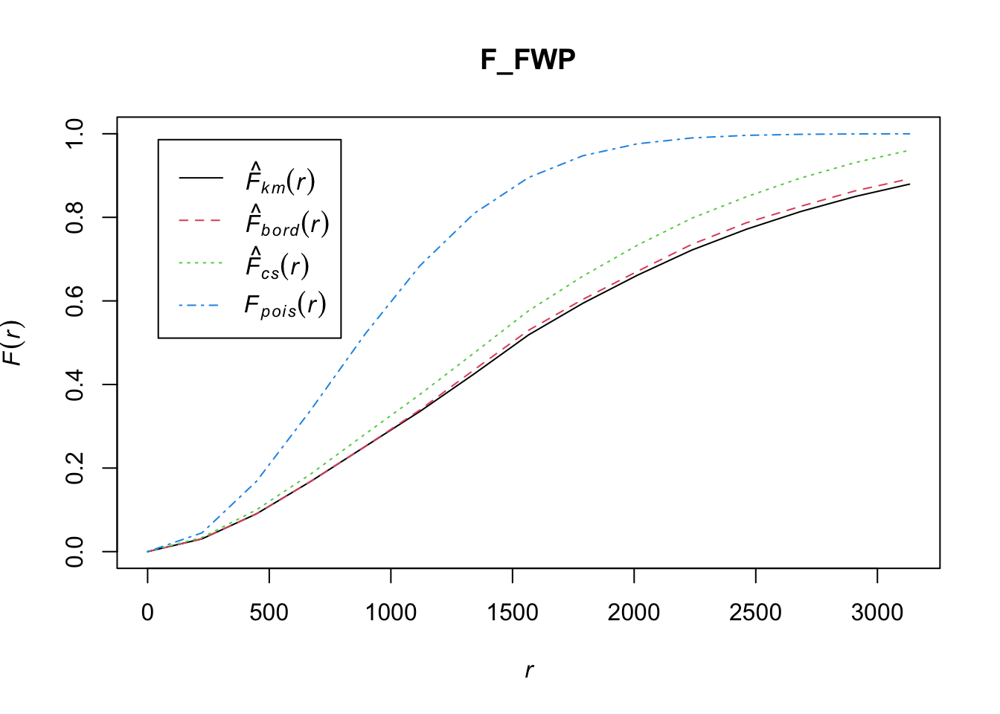

pacman::p_load(maptools, sf, raster, spatstat, tmap, tidyverse, funModeling)Take Home Exercise 1
1 Setting the Scene
Water is an important resource to mankind. Clean and accessible water is critical to human health. It provides a healthy environment, a sustainable economy, reduces poverty and ensures peace and security. Yet over 40% of the global population does not have access to sufficient clean water. By 2025, 1.8 billion people will be living in countries or regions with absolute water scarcity, according to UN-Water. The lack of water poses a major threat to several sectors, including food security. Agriculture uses about 70% of the world’s accessible freshwater.
Developing countries are most affected by water shortages and poor water quality. Up to 80% of illnesses in the developing world are linked to inadequate water and sanitation. Despite technological advancement, providing clean water to the rural community is still a major development issues in many countries globally, especially countries in the Africa continent.
To address the issue of providing clean and sustainable water supply to the rural community, a global Water Point Data Exchange (WPdx) project has been initiated. The main aim of this initiative is to collect water point related data from rural areas at the water point or small water scheme level and share the data via WPdx Data Repository, a cloud-based data library. What is so special of this project is that data are collected based on WPDx Data Standard.
The data we will be using here are:
Aspatial Data
- WPdx Global Data Repositories: WPdx+ data set
Geospatial Data
- State Boundary GIS: geoBoundaries data set
2 Install & Load Packages
3 Load Data into Rstudio
3.1 Load Geospatial data in
geoNGA2 <- st_read(dsn = "data/geospatial", layer = "nga_admbnda_adm2_osgof_20190417")Reading layer `nga_admbnda_adm2_osgof_20190417' from data source
`/Users/junhaoteo/Documents/junhao2309/IS415/Take-Home_Ex/Take-Home_Ex01/data/geospatial'
using driver `ESRI Shapefile'
Simple feature collection with 774 features and 16 fields
Geometry type: MULTIPOLYGON
Dimension: XY
Bounding box: xmin: 2.668534 ymin: 4.273007 xmax: 14.67882 ymax: 13.89442
Geodetic CRS: WGS 843.2 Load Aspatial Data in
wp_nga <- read_csv("data/aspatial/WPDX.csv") %>%
filter(`#clean_country_name` == "Nigeria", `#clean_adm1` =="Osun")4 Geospatial Data wrangling
4.1 Check duplicates
We have to check the data for any duplicated names. After checking, there are several duplicates and thus we get their indices out and replace them with the corresponding names.
geoNGA2$ADM2_EN[duplicated(geoNGA2$ADM2_EN) == TRUE][1] "Bassa" "Ifelodun" "Irepodun" "Nasarawa" "Obi" "Surulere"duplicated_LGA <- geoNGA2$shapeName[duplicated(geoNGA2$shapeName) == TRUE]
# Get all the indices with names that are included in the duplicated LGA names
duplicated_indices <- which(geoNGA2$shapeName %in% duplicated_LGA)
geoNGA2$ADM2_EN[94] <- "Bassa, Kogi"
geoNGA2$ADM2_EN[95] <- "Bassa, Plateau"
geoNGA2$ADM2_EN[304] <- "Ifelodun, Kwara"
geoNGA2$ADM2_EN[305] <- "Ifelodun, Osun"
geoNGA2$ADM2_EN[355] <- "Irepodun, Kwara"
geoNGA2$ADM2_EN[356] <- "Irepodun, Osun"
geoNGA2$ADM2_EN[519] <- "Nasarawa, Kano"
geoNGA2$ADM2_EN[520] <- "Nasarawa, Nasarawa"
geoNGA2$ADM2_EN[546] <- "Obi, Benue"
geoNGA2$ADM2_EN[547] <- "Obi, Nasarawa"
geoNGA2$ADM2_EN[693] <- "Surulere, Lagos"
geoNGA2$ADM2_EN[694] <- "Surulere, Oyo"The code chunk below filters out geoNGA2 into Osun state Local Government Area
osun_LGA <- c("Aiyedade","Aiyedire","Atakumosa East", "Atakumosa West",
"Ede North", "Ede South", "Egbedore", "Ejigbo", "Ife Central",
"Ife East", "Ife North", "Ife South", "Ifedayo", "Ila",
"Ifelodun, Osun","Irepodun, Osun","Ilesha East", "Ilesha West",
"Irewole", "Isokan", "Iwo", "Obokun", "Odo-Otin", "Ola-oluwa",
"Olorunda", "Oriade", "Orolu", "Osogbo", "Boripe", "Boluwaduro")
osun <- geoNGA2 %>%
filter(ADM2_EN %in% osun_LGA)We will use st_crs() to check the crs of geoNGA2
st_crs(geoNGA2)Coordinate Reference System:
User input: WGS 84
wkt:
GEOGCRS["WGS 84",
DATUM["World Geodetic System 1984",
ELLIPSOID["WGS 84",6378137,298.257223563,
LENGTHUNIT["metre",1]]],
PRIMEM["Greenwich",0,
ANGLEUNIT["degree",0.0174532925199433]],
CS[ellipsoidal,2],
AXIS["latitude",north,
ORDER[1],
ANGLEUNIT["degree",0.0174532925199433]],
AXIS["longitude",east,
ORDER[2],
ANGLEUNIT["degree",0.0174532925199433]],
ID["EPSG",4326]]We can see that currently geoNGA2 is in EPSG:4326. We have to convert to 26392 by using st_transform. The code chunk below transforms the data to crs = 26392 and is filtered by shapeName to our study area, Osun.
osun <- osun %>%
st_transform(crs = 26392)4.2 Plot Geospatial Data
plot(osun)
5 Aspatial Data wrangling
5.1 Create simple feature on wp_nga
Using what we learn on Hands-on Exercise 1, we can create a simple feature using st_as_sf() from the sf package. We have to ensure that the file follows the same crs and therefore we use st_transform again to convert it into crs = 26392.
wp_nga_sf <- st_as_sf(wp_nga, coords = c("#lon_deg", "#lat_deg"), crs = 4326) %>%
st_transform(crs = 26392)5.2 Cleaning up NA entries in aspatial data
By using the functions in the dplyr package, we can use rename() to rename #status_clean to status_clean, select() to pick the required column variable and replacing NA to unknown.
wp_nga_sf <- wp_nga_sf %>%
rename(status_clean = `#status_clean`) %>%
select(status_clean) %>%
mutate(status_clean = replace_na(
status_clean, "unknown"))5.3 Filter out functional and non-functional data
By using filter() from the dplyr package, we can filter out entries with functional and non-functional water points.
wp_functional <- wp_nga_sf %>%
filter(status_clean %in%
c("Functional",
"Functional but not in use",
"Functional but needs repair"))
wp_nonfunctional <- wp_nga_sf %>%
filter(status_clean %in%
c("Abandoned/Decommissioned",
"Abandoned",
"Non-Functional due to dry season",
"Non-Functional",
"Non functional due to dry season"))5.4 Population Data
5.4.1 Load Data in and select relevant columns
nga_pop <- read_csv("data/pop_data_nga.csv")
osun_pop <- nga_pop %>%
filter(nga_pop$`State ` == "Osun") %>%
rename(ADM2_EN = `Local gov. area▲`,
HASC = `HASC `,
Capital = `Capital `,
Population = `Population `)5.4.2 Ensure Names match with osun
osun_pop[1,1] <- "Aiyedade"
osun_pop[3,1] <- "Atakumosa East"
osun_pop[4,1] <- "Atakumosa West"
osun_pop[20,1] <- "Irepodun, Osun"
osun_pop[16,1] <- "Ifelodun, Osun"Once names have matched, we can merge the tibble as one dataset
osun_pop_density <- osun %>%
left_join(osun_pop, by = "ADM2_EN")We can then have the population density of Osun by its local government areas (LGA). The code chunk below will generate the plot. Further down, we will discuss why having a population density mapping is important in formulating our hypothesis claim.
tmap_mode("plot")
tm_shape(osun_pop_density) +
tm_fill("Density",
style = "quantile",
palette = "Blues",
title = "Population Density") +
tm_layout(main.title = "Population Density of Osun LGA",
main.title.position = "center",
legend.height = 0.45,
legend.width = 0.35,
frame = TRUE) +
tm_borders(alpha = 0.5) +
tm_compass(type="8star", size = 2) +
tm_grid(alpha =0.2) +
tm_credits("Source: http://www.geo-ref.net/ph/nga.htm",
position = c("left", "bottom"))
6 Kernel Density Analysis
6.1 Converting object to relevant datatype
We have to convert sf to sp then to ppp so that it is readable by the spatstat package ### Convert sf to sp Spatial class
osun_spatial <- as(osun, "Spatial")
wp_functional_spatial <- as(wp_functional, "Spatial")
wp_nonfunctional_spatial <- as(wp_nonfunctional, "Spatial")6.1.1 Converting the Spatial point data frame into generic SP format
osun_sp <- as(osun_spatial, "SpatialPolygons")
wp_func_sp <- as(wp_functional_spatial, "SpatialPoints")
wp_nonfunc_sp <- as(wp_nonfunctional_spatial, "SpatialPoints")6.1.2 Convert sp to spatstat ppp format
wp_func_ppp <- as(wp_func_sp, "ppp")
wp_nonfunc_ppp <- as(wp_nonfunc_sp, "ppp")6.2 Create owin object
osun_owin <- as(osun_sp, "owin")6.3 Combine waterpoints and study area together
osun_wpfunc <- wp_func_ppp[osun_owin]
osun_wpnonfunc <- wp_nonfunc_ppp[osun_owin]6.4 Rescaling
Before we go on to calculate the kernal density, we should rescale the data as taught in Hands-on Ex 4 Chapter 5.
osun_wpfunc_km <- rescale(osun_wpfunc, 1000, "km")
osun_wpnonfunc_km <- rescale(osun_wpnonfunc, 1000, "km")6.5 Creating Kernal Density Estimate
kde_func<-density(osun_wpfunc_km,
sigma=bw.diggle,
edge=TRUE,
kernel="gaussian")
kde_nonfunc <- density(osun_wpnonfunc_km,
sigma=bw.diggle,
edge= TRUE,
kernel = "gaussian")
par(mfrow = c(1,2))
plot(kde_func, main = "Functional Water Points")
plot(kde_nonfunc, main = "Non-Functional Water Points")
6.6 Convert KDE output into gridded objects
For mapping purposes, we can convert the KDE output into a grid object. To do so, we can use as.SpatialGridDataFrame.im() from raster
gridded_osun_wp <- as.SpatialGridDataFrame.im(kde_func)
gridded_osun_nwp <-as.SpatialGridDataFrame.im(kde_nonfunc)6.7 Convert gridded object into raster
After converting the KDE output into a gridded object, we can use raster() from the raster package to then convert it into raster.
osun_wp_raster <- raster(gridded_osun_wp)
osun_nwp_raster <- raster(gridded_osun_nwp)
osun_wp_rasterclass : RasterLayer
dimensions : 128, 128, 16384 (nrow, ncol, ncell)
resolution : 0.8948485, 0.9616045 (x, y)
extent : 176.5032, 291.0438, 331.4347, 454.5201 (xmin, xmax, ymin, ymax)
crs : NA
source : memory
names : v
values : -4.734822e-15, 25.49435 (min, max)osun_nwp_rasterclass : RasterLayer
dimensions : 128, 128, 16384 (nrow, ncol, ncell)
resolution : 0.8948485, 0.9616045 (x, y)
extent : 176.5032, 291.0438, 331.4347, 454.5201 (xmin, xmax, ymin, ymax)
crs : NA
source : memory
names : v
values : -4.082312e-15, 20.49412 (min, max)The output of the above code chunk shows that crs in both raster object is NA. We have to input the crs = 26392 and ensure the measurements are in “km”.
projection(osun_wp_raster) <- CRS("+init=EPSG:26392 +units=km")
projection(osun_nwp_raster) <- CRS("+init=EPSG:26392 +units=km")
osun_wp_raster ; osun_nwp_rasterclass : RasterLayer
dimensions : 128, 128, 16384 (nrow, ncol, ncell)
resolution : 0.8948485, 0.9616045 (x, y)
extent : 176.5032, 291.0438, 331.4347, 454.5201 (xmin, xmax, ymin, ymax)
crs : +init=EPSG:26392 +units=km
source : memory
names : v
values : -4.734822e-15, 25.49435 (min, max)class : RasterLayer
dimensions : 128, 128, 16384 (nrow, ncol, ncell)
resolution : 0.8948485, 0.9616045 (x, y)
extent : 176.5032, 291.0438, 331.4347, 454.5201 (xmin, xmax, ymin, ymax)
crs : +init=EPSG:26392 +units=km
source : memory
names : v
values : -4.082312e-15, 20.49412 (min, max)Now, we can see that the crs has been inputted in.
6.8 Visualising the data
The code chunk below visualises the raster onto the OpenStreetMap layout and by setting the zoom.limits to 9 and 14, it fixes the map to the specific region, Osun.
tmap_mode("view")
tm_basemap(server ="OpenStreetMap") +
tm_shape(osun_wp_raster) +
tm_raster("v") +
tm_layout(title = "Functional Waterpoints Density",
legend.position = c("right", "Top"),
frame = FALSE) +
tm_view(set.zoom.limits =c(9,14))tm_basemap(server ="OpenStreetMap") +
tm_shape(osun_nwp_raster) +
tm_raster("v") +
tm_layout(title = "Non-Functional Waterpoints Density",
legend.position = c("right", "top"),
frame = FALSE) +
tm_view(set.zoom.limits =c(9,14))6.9 Advantages of Kernal Density Map over Point Map
7 Second-Order Spatial Point Patterns Analysis
7.1 G-function
The nearest-neighbour distance is the measure of the distance between a point and its closest neighboring point.
Gest() of spatstat package is used to compute the G function
G_FWP <- Gest(wp_func_ppp, correction = "border")
G_NFWP <- Gest(wp_nonfunc_ppp, correction = "border")
par(mfrow = c(2,1))
plot(G_FWP, xlim = c(0,500)) ; plot(G_NFWP, xlim = c(0,500))7.2 F function
Unlike the G function, the F function in Fest() is used to measure the distribution of nearest neighbour distances. The code chunk below showcases this:
# Functional Water Point
F_FWP<- Fest(wp_func_ppp)
plot(F_FWP) 
# Non-Functional WaterPoints
F_NFWP <- Fest(wp_nonfunc_ppp)
plot(F_NFWP)
7.3 L Function
L_FWP <- Lest(wp_func_ppp, correction = "Ripley")
plot(L_FWP, .-r ~r, ylab="L(d)-r", xlab ="d(m)")
L_NFWP <- Lest(wp_nonfunc_ppp, correction = "Ripley")
plot(L_NFWP, .-r ~r, ylab="L(d)-r", xlab ="d(m)")8 Performing Complete Spatial Randomness Test
In running the test, we will be using envelope() from spatstat.
The null and alternative hypothesis are:
Ho : The distribution of functional waterpoints in Osun State are randomly distributed
H1 : The distribution of functional waterpoints in Osun State are not randomly distributed
We will use the 95% confidence level in our test.
The null hypothesis will be rejected if p-value is smaller than the alpha value, 0.005.
L_FWP_test <- envelope(wp_func_ppp, Lest, nsim = 49, rank = 1, glocal= TRUE)Generating 49 simulations of CSR ...
1, 2, 3, 4, 5, 6, 7, 8, 9, 10, 11, 12, 13, 14, 15, 16, 17, 18, 19, 20, 21, 22, 23, 24, 25, 26, 27, 28, 29, 30, 31, 32, 33, 34, 35, 36, 37, 38, 39, 40,
41, 42, 43, 44, 45, 46, 47, 48, 49.
Done.plot(L_FWP_test, xlim = c(0,500))
Simulation shows that the black line is outside the 95% Confidence interval for all values of r. We can thus reject the null hypothesis for all values of r.
This makes sense as